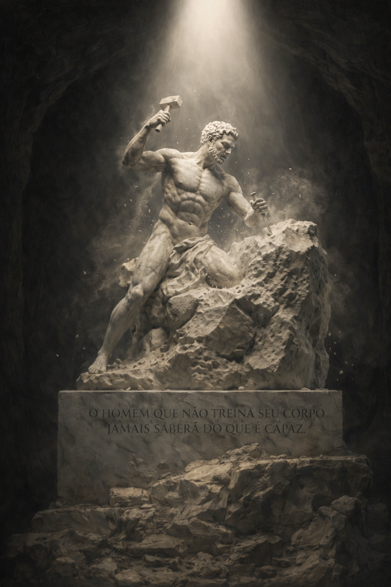

Frequência Mental.
O silêncio que precede o seu rugido.
A desmotivação não é ausência de força; é uma frequência que está desalinhada. Recupere a sua potência mental hoje.

A desmotivação não é ausência de força; é uma frequência que está desalinhada. Recupere a sua potência mental hoje.

Descubra como as expectativas dos outros moldaram seus limites. Este guia é o primeiro passo para quebrar esse padrão.
Você não está sozinho. Muitas pessoas lutam com esses sentimentos todos os dias, mas a boa notícia é que você não precisa mais enfrentá-los sozinho.
Com o e-book "Frequência Mental Poderosa", você finalmente terá as ferramentas necessárias para superar esse ciclo de desmotivação e encontrar um propósito significativo em sua vida.
Ao mergulhar nas páginas deste livro, você descobrirá estratégias e práticas para reprogramar sua mente, cultivar uma mentalidade positiva e desenvolver hábitos que o levarão ao sucesso duradouro.


"O desânimo é o grito de uma alma que possui um potencial maior do que a rotina que a aprisiona."
Imagine acordar todas as manhãs com uma sensação renovada de energia e entusiasmo. Imagine enfrentar cada dia com uma clareza de propósito que o impulsiona em direção aos seus sonhos mais profundos. Isso não é apenas um sonho distante - é uma realidade ao seu alcance.
Deixe para trás a sensação de desânimo e falta de direção. Em vez disso, embarque em uma jornada de autodescoberta e crescimento pessoal que o capacitará a alcançar todo o seu potencial.
Quando a mente se alinha com o propósito, o medo desaparece. Não porque os problemas sumiram, mas porque você se tornou maior do que eles.
Este não é apenas um e-book. É o resgate de uma autoridade que você sempre possuiu, mas que lhe ensinaram a esquecer, e como dizia os gregos precisa ser rememorada.

A caminhada solitária muitas vezes é a mais difícil. Mas você não precisa mais carregar esse fardo sozinho. Ao seu lado, há uma comunidade de pessoas que, assim como você, decidiram romper as correntes da desmotivação e abraçar uma vida com propósito e significado.
Cada passo dado em direção à sua transformação ecoa em todos que compartilham desse mesmo ideal. Juntos, somos mais fortes. Juntos, despertamos o rugido que há dentro de cada um de nós.
Não espere mais. O momento de agir é agora, e você não está sozinho nesta jornada.

Imagine acordar todas as manhãs com uma sensação renovada de energia e entusiasmo. Imagine enfrentar cada dia com uma clareza de propósito que o impulsiona em direção aos seus sonhos mais profundos. Isso não é apenas um sonho distante - é uma realidade ao seu alcance.
A transformação que você tanto busca não está em um futuro distante ou em circunstâncias externas que você não controla. Ela começa dentro de você, na decisão silenciosa de hoje de dizer "chega" à apatia e "sim" à sua própria grandeza.
Cada pensamento que você cultiva, cada hábito que você constrói, cada pequena vitória que você celebra - tudo isso são degraus na escada que leva à versão mais poderosa de si mesmo.

O mapa definitivo para a sua transformação pessoal. Saia da apatia e desperte a autoridade natural que sempre esteve aí.
Risco Zero • Acesso Vitalício • Purificação Mental